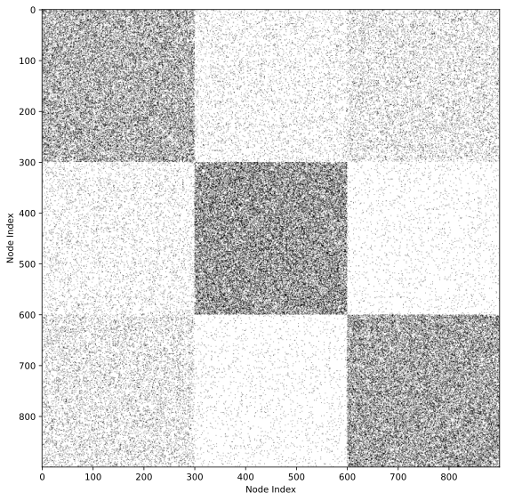

Birds of a Feather — and the Flocks That Were Never There
The big question of this module. What is a community in a network, and how would you know if the one you found is real?
What you will be able to do — and what you will learn to distrust
Community detection is the most widely used technique in network analysis and the most argued-about. By the end of this module you will be able to:
- state several precise definitions of “community” and say what each one keeps and what it throws away;
- compute modularity by hand, and explain what its null model — the configuration model — is doing;
- run and compare Louvain, Leiden, label propagation and Girvan-Newman, and score the results with NMI and ARI;
- name three ways these methods mislead you: the resolution limit, degeneracy, and communities found in pure noise.
Start with the worksheet, not the reading
Before you read on, work the pen-and-paper worksheet (handed out in class; the PDF is being rewritten). It gives you two five-student friend groups and asks you to decide how imperfect a group is allowed to be, then hands you eight students and asks you to cut them in two. You will reinvent half the definitions in this module before anyone names them for you — and you will find out that your neighbour drew different boundaries.
A community is a set of nodes that connect alike
Birds of a feather flock together, and so do many other things. For instance, we have a group of friends with similar interests who hang out together frequently but may not interact as much with other groups.
In networks, communities are groups of nodes that share similar connection patterns. Most of this module treats a community as a densely-connected clump, because that is what almost every method looks for. Keep in mind, though, that “similar connection pattern” is the broader idea: two users who never rate each other but always rate the same films share a pattern, and we will come back to that case with the stochastic block model at the end of the module.
Communities reflect underlying mechanisms of network formation and underpin the dynamics of information propagation. Examples include:
- Homophily: The tendency of similar nodes to form connections.
- Functional groups: Nodes that collaborate for specific purposes.
- Hierarchical structure: Smaller communities existing within larger ones.
- Information flow: The patterns of information, influence, or disease propagation through the network.
This is why network scientists are sooo obsessed with community structure in networks. See (Fortunato 2010), (Fortunato and Hric 2016), (Peixoto 2019) for comprehensive reviews on network communities.
Define the shape first: cliques and how to loosen them
There is no answer key. Community detection is an unsupervised problem — nobody hands you the correct grouping to learn from or to check against, the way a spam filter is handed a folder of labelled spam. Every method below therefore has to say, up front, what shape it is hunting for. Change the shape and you change the communities, on the very same network.
The oldest approach says the shape out loud: define a community by a specific connectivity pattern, then go looking for that pattern. This is pattern matching.
The strictest pattern is a clique: a group of nodes all connected to each other. A triangle is a 3-clique; four people who all know each other form a 4-clique. Figure 1 shows the first three.
Cliques are too rigid for real data. In a friendship circle of ten people, one missing acquaintance destroys the clique, yet nobody would say the circle is not a group. This leads to relaxed versions of cliques, called pseudo-cliques.
A pseudo-clique loosens exactly one of three screws: how many neighbours each member must have (degree), what fraction of the possible internal edges must exist (density), or how far apart two members may be (distance). We take them one at a time. What matters is not the eight names below but the lesson at the end of the section: each screw gives a different answer on the same network.
Let everyone miss a few friends: k-plex and k-core
Degree relaxation acknowledges that real-world groups rarely have perfect connectivity among all members. In a k-plex (Seidman and Foster 1978), a group of n nodes qualifies if every member is connected to at least n-k of the others — that is, each member may miss up to k-1 of its fellow members. A 1-plex is exactly a clique; a 2-plex lets each person skip one acquaintance.
A different relaxation is the k-core (Seidman 1983), which requires each node to have at least k connections inside the group, no matter how large the group is. Notice the difference: the k-plex bar rises as the group grows (n-k climbs with n), while the k-core bar stays put. That is why the two disagree, as Figure 2 shows.
Let the group be mostly connected: ρ-dense subgraphs
Density relaxation shifts the focus from individual connections to the overall cohesiveness of the group. Instead of requiring every possible connection, a \rho-dense subgraph (Goldberg 1984) enforces that the group contains at least a fraction \rho of all possible internal edges. Five nodes have 5 \times 4 / 2 = 10 possible internal edges, so a five-node group with seven of them is 0.7-dense.
Density alone is a blunt instrument, and Figure 3 shows why: the two groups below have exactly the same seven edges’ worth of density and could not look less alike.
Let friends-of-friends count: n-clique, n-clan, n-club
Distance relaxation allows for the inclusion of nodes that are not directly connected but are still close in terms of network steps. The n-clique (Luce 1950) is a group where every pair of nodes is within n steps of each other, so members can be connected through mutual friends. However, this can sometimes include connections that pass through nodes outside the group, which led to refinements such as the n-clan and n-club (Mokken et al. 1979), where all paths between members must remain within the group itself. Figure 4 shows a group that is a 2-clique only because of two outsiders.
Turn two screws at once: k-truss and the ρ-dense core
Hybrid definitions tighten degree and density together. The k-truss (Saito et al. 2008; Cohen 2009; Wang et al. 2010) requires that every edge in the group sit in at least k-2 triangles, so a tie only counts if the two people also share a friend inside the group. The \rho-dense core (Koujaku et al. 2016) asks for high internal density and few edges leaving, so the group is cohesive inside and separated outside.
NoteThe point of the zoo
Eight names, eight definitions, and on a real network they will not agree with each other. That is the lesson, and it is the reason the rest of the module abandons pattern matching: instead of declaring the shape in advance, we will write down a score for a whole partition and optimize it. The score is still a definition of community — it is just a definition you can compute with.
Cut the network in two — and why the cheapest cut is a cheat
Another approach from computer science is to treat a community detection problem as an optimization problem. An early example is the graph cut problem, which asks to find the minimum number of edges to cut the graph into two disconnected components.
Specifically, let us consider cutting the network into two communities. Let V_1 and V_2 be the set of nodes in the two communities. Then, the cut is the number of edges between the two communities, which is given by
\begin{align} \text{Cut}(V_1, V_2) = \sum_{i \in V_1} \sum_{j \in V_2} A_{ij} \end{align}
Now, the community detection problem is translated into an optimization problem, with the goal of finding a cut V_1, V_2 that minimizes \text{Cut}(V_1, V_2).
NoteTry it, then read on
The description of this problem is not complete. Can you say what is missing? Without it, the best cut is trivial.
Graph cut, hands on — ten nodes in two colours; click a node to move it to the other side, and the panel counts the edges you have cut. Get the count as low as you can.
NoteClick to reveal the answer
The missing element is a constraint: each community must contain at least one node. Without this, the trivial solution of placing all nodes in a single community would always yield a cut of zero.
Divide by the size, or the cheapest cut peels off one node
Even with that constraint, graph cut gives unbalanced communities: one community holding a single node and another holding everything else. If the network has a node of degree one, the optimal cut puts that node alone, for a cut of exactly one edge. Technically minimal, and useless.
Ratio cut fixes this by dividing by the community sizes. For two communities V_1 and V_2,
\begin{align} \text{Ratio cut}(V_1, V_2) = \frac{1}{|V_1| \cdot |V_2|} \sum_{i \in V_1} \sum_{j \in V_2} A_{ij} \end{align}
We are minimizing this, so a larger denominator is better, and the denominator is largest when the two sides are equal. Put numbers on it with n = 10 nodes. Peeling off one degree-one node cuts a single edge and scores 1 / (1 \times 9) = 0.11. Splitting down the middle cuts two edges but scores 2 / (5 \times 5) = 0.08. The balanced partition now wins despite cutting twice as many edges. That is the whole trick.
Normalized cut (Shi and Malik 2000) runs the same trick on degrees rather than node counts. Write \text{vol}(V_c) = \sum_{i \in V_c} k_i for the volume of a community — the total degree of its members, counting the edges that leave as well as the ones that stay. Then
\text{Normalized cut}(V_1, V_2) = \frac{1}{\text{vol}(V_1) \cdot \text{vol}(V_2)} \sum_{i \in V_1} \sum_{j \in V_2} A_{ij}
Balancing by volume rather than by head count matters when degrees are uneven: ten hubs and ten leaves are the same size but nothing like the same amount of network.
The same objectives for more than two communities
Ratio cut and Normalized cut extend to any number of communities. Let K denote the number of communities, and let V_1, V_2, \dots, V_K be the communities themselves. We use the index c \in \{1, \dots, K\} to run over them. Then
\begin{align} \text{Ratio cut}(V_1, \dots, V_K) &= \sum_{c=1}^K \frac{1}{|V_c|} \left(\sum_{i \in V_c} \sum_{j \notin V_{c}} A_{ij} \right) \\ \text{Normalized cut}(V_1, \dots, V_K) &= \sum_{c=1}^K \frac{1}{\text{vol}(V_c)} \left(\sum_{i \in V_c} \sum_{j \notin V_{c}} A_{ij} \right) \end{align}
The inner double sum counts the edges leaving community c, and dividing by |V_c| (or \text{vol}(V_c)) penalizes the objective for making any one community tiny.
Setting K = 2 gives back the two-community definitions above, up to a constant that does not depend on where you draw the line. For ratio cut, \text{Cut} \left( \tfrac{1}{|V_1|} + \tfrac{1}{|V_2|} \right) = \text{Cut} \cdot \tfrac{n}{|V_1||V_2|}, and n is fixed. For normalized cut the same algebra gives a factor 2m, since \text{vol}(V_1) + \text{vol}(V_2) = 2m always. A constant factor cannot change which partition wins, so the two ways of writing it rank partitions identically.
For both ratio and normalized cut, finding the best cut is NP-hard. There are good heuristics; the standard reference is Ulrike von Luxburg, “A Tutorial on Spectral Clustering”, and Module 8 shows where the eigenvectors come from.
Both objectives share two limitations. First, they require us to choose the number of communities in advance, which is exactly what we do not know. Second, the normalizer that saved us from the lone-node cut now pushes the other way: both favour communities of similar size, even though real communities vary enormously (Palla et al. 2005; Clauset et al. 2004). Modularity, next, removes the first limitation and keeps the second.
Modularity: count the matches, then subtract the luck
Modularity is by far the most widely used method for community detection. Modularity can be derived in many ways, but we will follow the one derived from assortativity.
Assortativity is a measure of the tendency of nodes to connect with nodes of the same attribute. The attribute, in our case, is the community that the node belongs to, and we say that a network is assortative if nodes of the same community are more likely to connect with each other than nodes of different communities.
Let’s think about assortativity by using colored balls and strings. The rules take one minute to read; a few paragraphs from now you will play the whole game on a network small enough to check by hand.
Imagine we’re playing a game as follows:
- Picture each connection in our network as two colored balls joined by a piece of string.
- The color of each ball shows which community it belongs to.
- Now, let’s toss all these ball-and-string pairs into a big bag.
- We’ll keep pulling out strings with replacement and checking if the balls on each end match colors.
The more color matches we find, the more assortative our network is. But, there’s a catch! What if we got lots of matches just by luck? For example, if all our balls were the same color, we’d always get a match. But that doesn’t tell us much about our communities. So, to be extra clever, we compare our results to a “random” version (null model):
- We snip all the strings and mix up all the balls.
- Then we draw pairs of balls at random with replacement and see how often the colors match.
By comparing our original network to this mixed-up version, we can see if our communities are really sticking together more than we’d expect by chance. For example, if all nodes belong to the same community, we would always get a match for the random version as well, which informs us that a high likelihood of matches is not surprising.
Building on this, the modularity is
\text{(fraction of strings whose ends match)} - \text{(fraction expected to match by chance)}
which is exactly the arithmetic the two bags below perform: 0.900 - 0.500 = 0.400.
This comparison against the random version is the heart of modularity. Unlike graph cut methods that aim to maximize assortativity directly, modularity measures assortativity relative to a null model. That null model has a name: it is the configuration model, the ensemble of all networks that keep every node’s degree but rewire the edges at random. Modularity does not ask “are these groups dense?” — it asks “are these groups denser than they would be if the same people made the same number of friendships blindly?”
Writing the game as a formula
To put modularity into math terms, we need a few ingredients:
- m: The total number of strings (edges) in our bag
- n: The total number of balls (nodes) we have
- C: The total number of colors (communities), which we choose in advance for now
- A_{ij}: This tells us if ball i and ball j are connected by a string
- \delta(x, y): This is our color-checker. It gives us a 1 if x and y are the same and 0 otherwise. We will use it two ways: \delta(c_i, c_j) asks whether balls i and j share a color, and \delta(c, c_i) asks whether ball i has the particular color c.
Now, the probability of pulling out a string out of m string and finding matching colors on both ends is:
\frac{1}{m} \sum_{i=1}^n \sum_{j=i+1}^n A_{ij} \delta(c_i,c_j) = \frac{1}{2m} \sum_{i=1}^n \sum_{j=1}^n A_{ij} \delta(c_i,c_j)
We set A_{ii} = 0 by assuming our network doesn’t have any “selfie strings” (where a ball is connected to itself). Also, we changed our edge counting a bit. Instead of counting each string once (which gave us m), we’re now counting each string twice (once from each end). That’s why we use 2m on the right-hand side of the equation.
Now, imagine we’ve cut all the strings, and we’re going to draw two balls at random with replacement. Here’s how our new bag looks:
- We have 2m balls in total (1 string has 2 balls, and thus m strings have 2m balls in total).
- A node with k edges correspond to the k of 2m balls in the bag.
- The color of each ball in our bag matches the color (or community) of its node in the network.
Now, what’s the chance of pulling out two balls of the same color?
\sum_{c=1}^C \left( \frac{1}{2m}\sum_{i=1}^n k_i \delta(c, c_i) \right)^2
where k_i is the degree (i.e., the number of edges) of node i.
Here’s what it means in simple terms:
- We look at each color (c) one by one (the outer sum).
- For each color, we count the balls of that color in the bag: \sum_{i=1}^n k_i \delta(c, c_i). Node i contributed k_i balls, and \delta(c, c_i) keeps only the nodes wearing color c, so this is a plain head count — a whole number between 0 and 2m.
- We divide that count by the 2m balls in the bag, which turns it into the probability of drawing color c: \frac{1}{2m}\sum_{i=1}^n k_i \delta(c, c_i). The division happens once, here, and nowhere else.
- We then calculate the chance of grabbing that color twice in a row, which is that probability squared (\left( \frac{1}{2m}\sum_{i=1}^n k_i \delta(c, c_i) \right)^2).
- Finally, we add up these chances for all C colors.
Putting altogether, the modularity is defined by
\begin{align} Q &=\frac{1}{2m} \sum_{i=1}^n \sum_{j=1}^n A_{ij} \delta(c_i,c_j) - \sum_{c=1}^C \left( \frac{1}{2m}\sum_{i=1}^n k_i \delta(c, c_i) \right)^2 \end{align}
By rearranging the terms, we get the standard expression for modularity:
Q =\frac{1}{2m} \sum_{i=1}^n \sum_{j=1}^n \left[ A_{ij} - \frac{k_ik_j}{2m} \right]\delta(c_i,c_j)
The two expressions are the same thing; turning one into the other is four lines of algebra, worked out in the appendix.
Reading a modularity score
Two practical facts about Q before we start optimizing it.
Its range is [-1/2, 1). Not [-1, 1]: the tight lower bound is -1/2, and Q = 1 is never actually attained. Q = 0 means the partition captures exactly what the null model already predicts — no structure found. Negative values mean the groups have fewer internal edges than chance, which is what you get if you deliberately split a community down the middle. In practice, partitions of real networks with genuine community structure land somewhere around 0.3 to 0.7, and Q > 0.3 is often quoted as a rule of thumb for “meaningful” structure.
Treat that threshold with suspicion. As we will see shortly, a random graph with no structure whatsoever routinely scores above it.
Maximizing it is NP-hard. There are exponentially many ways to partition N nodes, and no algorithm is known that finds the maximum-Q partition in polynomial time. Every method below is therefore a heuristic: it returns a good partition, never a certified best one. This has a practical consequence you will notice immediately — run the same algorithm twice and you may get two different answers.
How to actually find high-modularity partitions
Greedy agglomeration. Start with every node in its own community. Repeatedly merge the pair of communities that increases Q the most, and stop when no merge helps. Simple, deterministic, and prone to getting stuck in mediocre local optima.
The Louvain algorithm (Blondel et al. 2008) is the workhorse. It alternates two phases:
- Local moving: visit each node and move it to whichever neighboring community increases Q the most, repeating until no single move helps.
- Aggregation: collapse each community into a single super-node, with edge weights summing the edges between communities (and self-loops carrying the internal edges). Then go back to phase 1 on this smaller network.
Each round shrinks the network, so Louvain runs on millions of nodes and produces a hierarchy of partitions as a by-product — one per level of aggregation.
The Leiden algorithm (Traag et al. 2019) fixes a genuine defect in Louvain. Because Louvain moves nodes one at a time, it can leave a community internally disconnected: the node that linked two halves gets moved away, and nothing checks the damage. Leiden adds a refinement step that guarantees every returned community is connected, and is usually faster as well. If you have a choice, use Leiden.
Label propagation takes a completely different tack: give every node a unique label, then repeatedly have each node adopt whichever label is most common among its neighbors. It converges in near-linear time with no objective function at all. The price is instability — different random visit orders give different partitions.
Girvan-Newman (Girvan and Newman 2002) works by deletion instead. It uses the edge betweenness of an edge: take every pair of nodes in the network, find the shortest path between them, and count how many of those paths run along this edge. An edge in the middle of a dense group has plenty of alternative routes around it and scores low; the one bridge between two groups carries every path from one side to the other and scores high. So: compute edge betweenness for all edges, delete the highest, recompute, repeat. Bridges go first and the network splits into a dendrogram of nested communities. It is beautifully interpretable and far too slow for large networks, since betweenness must be recomputed after every removal. Module 6 develops betweenness properly as a centrality measure.
NoteFive different answers to ‘what is a community?’
It is worth noticing that these methods do not merely differ in speed. They encode different definitions:
- Modularity methods (greedy, Louvain, Leiden): a community is a group with more internal edges than a degree-preserving null model predicts.
- Cut methods (ratio, normalized): a community is a group that is cheap to separate from the rest.
- Spectral methods (Module 8): a community is a cluster in the eigenvector coordinates of the Laplacian.
- Random-walk methods (Module 7: Infomap, Walktrap): a community is a region where a random walker gets trapped.
- Generative methods (the stochastic block model, below): a community is a latent label that explains the observed edges.
They frequently disagree on the same network. That disagreement is information, not noise.
Play with it: click a node and watch which bar moves
Everything above this point is a rule. What follows is the game, run on a network small enough to check by hand: twelve nodes, twenty edges, two bags. Watch it built once, then take the colours over.
The last step is the one thing a formula can only assert. Paint every node the same colour and every string matches, so the observed bar goes to 1.000 — and the luck bar goes to 1.000 with it, because a bag of forty balls that are all one colour matches itself every time. The difference is 0. The partition that trivially maximizes agreement is worth exactly nothing, and modularity knows it because of the subtraction, not in spite of it.
Notice also what moving a single node did: five strings broken, and Q fell from 0.400 to 0.119. Trying one node at a time and keeping the move that raises Q the most is Louvain’s local-moving phase from the previous section. Clicking around until Q stops rising is running that phase by hand.
Now take the same move to larger networks. Three rounds, each with a point:
Round 1 — two cliques, two colors. Click nodes to repaint them, and keep going until Q stops rising. You should land on the obvious answer. Two cliques, two colors
Round 2 — the same network, four colors. Unlike ratio and normalized cut, modularity’s objective does not take the number of communities as an input: hand it four colors and the highest-scoring partition is free to leave two of them unused. Check whether it does. Two cliques, four colors
Round 3 — a real network. The Zachary karate club: friendships among 34 members of a university karate club that split into two factions after a dispute. It is the fruit fly of network science. Karate club, four colors
Two ways modularity lies to you
Round 2 suggested that modularity picks the number of communities on its own. It does — and that is exactly where it goes wrong. Two failure modes, both well documented, both easy to reproduce.
It merges small communities: the resolution limit
Round 1 showed modularity splitting two cliques joined by a single edge into two communities, exactly as you would want. Communities are local structure: a tight group of friends is a tight group of friends whether the world around them holds a thousand people or a million. So adding another group somewhere far away, with no edge to either clique, should not change that verdict.
It changes it. Here is the cleanest known case (Fortunato and Barthelemy 2007), and it is small enough to check with a pencil: a ring of triangles, each joined to the next by a single edge. The two triangles at the top are yours. They never change — same three nodes each, same three edges, same one bridge between them, and nothing you add ever touches them. All the dial does is add more triangles on the far side of the ring.
Watch for the moment modularity stops calling your two triangles two communities and starts calling them one.
At four triangles, keeping them apart wins by 0.500 to 0.375. At eight it is an exact dead heat. At ten, merging wins — and your two triangles have not changed by one node or one edge. This is the resolution limit (Fortunato and Barthelemy 2007): modularity’s verdict about a small group depends on how big the rest of the network is.
NoteWhere the crossover comes from — arithmetic you can check yourself
The ring has n triangles. Each one carries 3 internal edges and one bridge to its neighbour, so the whole ring has m = 4n edges and 2m = 8n edge-ends.
Keep every triangle apart. 3n of the 4n edges have both ends in the same community, so the observed term is 3n/4n = 3/4. A triangle’s volume is 6 edge-ends inside plus 2 bridge ends = 8, so each community contributes (8/8n)^2 = 1/n^2 to the chance term, and n of those add up to 1/n:
Q_{\text{apart}} = \frac{3}{4} - \frac{1}{n}
Merge them in pairs. Each pair now holds 3 + 3 + 1 = 7 internal edges, because the bridge between the two is swallowed. There are n/2 pairs, so the observed term is (7n/2)/(4n) = 7/8. A pair’s volume is 8 + 8 = 16, so each community contributes (16/8n)^2 = 4/n^2, and n/2 of those add up to 2/n:
Q_{\text{pairs}} = \frac{7}{8} - \frac{2}{n}
Subtract.
Q_{\text{pairs}} - Q_{\text{apart}} = \left(\frac{7}{8} - \frac{3}{4}\right) - \left(\frac{2}{n} - \frac{1}{n}\right) = \frac{1}{8} - \frac{1}{n}
Merging buys you a fixed 1/8 of the edges and costs you 1/n. That is a bad trade while n < 8, exactly even at n = 8, and profitable forever after. Check it against the dial at n = 20: 3/4 - 1/20 = 0.700 against 7/8 - 2/20 = 0.775.
Now read the derivation again and notice what is missing from it. Nothing about your two triangles appears anywhere. The only quantity that decided their fate is n — the size of the rest of the network — and it got in through the chance term k_ik_j/2m, which carries the total edge count m. Every community is judged against the whole network, so as the network grows, a small group’s internal edges stop looking surprising and merging it into its neighbour becomes the better deal.
Fortunato and Barthélemy give the general scale: a community with fewer than roughly \sqrt{2m} internal edges is at risk of being swallowed. Read that as a danger zone, not a sharp line. In the ring m = 4n, so \sqrt{2m} = \sqrt{8n}, which already clears a triangle’s 3 internal edges from n = 2 onwards — and yet the merge only starts paying past n = 8. The square root tells you which communities to worry about; where the crossover actually falls depends on the network.
Note also that the scale is \sqrt{2m} and not m. In a network with m = 5{,}000 edges the blind spot covers communities smaller than about 100 edges. Grow the same network to m = 500{,}000 and the blind spot grows to about 1{,}000 edges: groups that were resolved before are now swallowed, without anything about them having changed.
It finds communities in pure noise
What if the network has no communities at all? Take a random network — every pair of nodes connected with the same probability, no structure of any kind — and maximize modularity on it. Random network, three colors
NoteClick here to see the solution
Modularity finds communities anyway, and scores them well — often higher than the score it gives the two-clique network, which does have real communities.
Nothing is broken. In a finite random network, some groups will by chance have a few more internal edges than average, and modularity maximization is very good at hunting for exactly those. It is finding shapes in clouds.
Two lessons follow:
- A modularity score cannot be compared across networks. Q = 0.4 on one network and Q = 0.4 on another are not the same claim.
- A high modularity score is not evidence that communities exist. To make that claim you need a comparison against randomized versions of your network — which is precisely what a generative model, coming next, gives you.
So should we abandon modularity? No. Every method has limitations, and knowing them is what separates using a tool from being used by it. There is “no free lunch” in community detection (Peel et al. 2017): no method is best on every network, because each encodes a different definition of what it is looking for. When modularity’s assumptions are met, it is very strong — for a certain class of networks it is provably optimal (Nadakuditi and Newman 2012).
The Stochastic Block Model: build the network from the communities
So far we have been handed a network and asked to find its communities. Flip the question. Start with the communities and ask: what kind of network would these communities produce? If you can answer that, you can turn it around and ask which communities make the network you actually observed most likely. This is the Stochastic Block Model (SBM).
The model in one line
In stochastic block model, we describe a network using probabilities given a community structure. Specifically, let us consider two nodes i and j who belong to community c_i and c_j. Then, the probability of an edge between i and j is given by their community membership.
P(A_{ij}=1|c_i, c_j) = p_{c_i,c_j}
where p_{c_i,c_j} is the probability of an edge between nodes in community c_i and c_j, respectively. Importantly, the probability p_{c_i,c_j} is specified by the community membership of the nodes, c_i and c_j. As a result, when plotting the adjacency matrix of one realization of SBM, we observe “blocks” of different edge densities — see Figure 5 — which is why we say that SBM is a “block model”.

One model, three kinds of structure
Stochastic Block Model is a flexible model that can be used to describe a wide range of network structures.
Let’s start with communities where nodes within a community are more likely to be connected to each other than nodes in different communities. We can describe this using SBM by:
P_{c,c'} = \begin{cases} p_{\text{in}} & \text{if } c = c' \\ p_{\text{out}} & \text{if } c \neq c' \end{cases}
- p_{\text{in}} is the chance of a connection between nodes in the same community
- p_{\text{out}} is the chance of a connection between nodes in different communities
Usually, we set p_{\text{in}} > p_{\text{out}}, because nodes in the same community tend to be more connected.
But, there’s more SBM can do:
Disassortative communities: What if we flip things around and set p_{\text{in}} < p_{\text{out}}? Now we have communities where nodes prefer to connect with nodes from other communities. This is the case we flagged at the very start of the module: the members of a group need not be connected to each other, only connected in the same way. Think of a dating network, or predators and prey. Modularity cannot express this at all; the SBM gets it for free.
Random networks: If we make p_{\text{in}} = p_{\text{out}}, we get a completely random network where every node has an equal chance of connecting to any other node. This is what we call an Erdős-Rényi network.
In sum, SBM has been used as a playground for network scientists. We can use it to create many interesting network structures and study how they behave.
Fitting the model: count the edges, divide by the pairs
If we know how a network is generated given a community membership, we can ask the reverse question: which community membership makes the observed network most likely? That is a maximum likelihood problem — write down the probability of seeing exactly this network under an assignment, then look for the assignment that makes it largest.
The probability of the whole network, given an assignment \{c_i\}, is one Bernoulli factor per pair of nodes:
P(\left\{A_{ij}\right\} \mid \left\{c_i\right\}) = \prod_{i<j} p_{c_i c_j}^{\,A_{ij}} \left(1-p_{c_i c_j}\right)^{1-A_{ij}}.
Each factor is a two-in-one shorthand: if the edge exists (A_{ij}=1) it contributes p_{c_ic_j}, and if it does not (A_{ij}=0) it contributes 1-p_{c_ic_j}. We multiply over i<j rather than over all i,j because the network is undirected — Alice being friends with Bob is one fact, not two.
Now hold the assignment fixed and ask for the best block probabilities. Taking the log turns the product into a sum, and the resulting log-likelihood {\cal L} is concave in each p_{cc'} — a hill with exactly one peak — so setting the derivative to zero finds the top. The answer is as unsurprising as it should be:
\widehat{p}_{cc'} = \frac{m_{cc'}}{N_{cc'}} = \frac{\text{edges you actually see between block } c \text{ and block } c'}{\text{pairs of nodes that could have carried one}}
where N_{cc'} = n_c n_{c'} when c \neq c', and N_{cc} = n_c(n_c-1)/2 when c = c' — the diagonal block is halved because a pair inside one community is counted once, not twice. The appendix works the derivative through.
A worked number. Suppose your assignment puts n_1 = 10 nodes in community 1 and n_2 = 10 in community 2. Inside community 1 there are 10 \times 9 / 2 = 45 possible edges and you count 27 of them, so \widehat{p}_{11} = 27/45 = 0.6. Between the two communities there are 10 \times 10 = 100 possible edges and you count 5, so \widehat{p}_{12} = 0.05. Assortative, by a factor of twelve.
WarningThe hard part is still hard
Fitting the probabilities is easy: one division per block. Choosing the assignment is not. There are exponentially many ways to label n nodes, the likelihood is not concave in those labels, and finding the best one is as intractable as maximizing modularity. Every SBM fitting routine you will use — greedy relabeling, belief propagation, Markov chain Monte Carlo — is a heuristic, and it can get stuck in a local optimum exactly the way Louvain does. The SBM buys you an honest probability model and a principled way to compare different numbers of communities; it does not buy you an escape from the search problem.
How do we know if the communities are any good?
You have run three algorithms and gotten three different partitions. Which one is right? The honest answer depends on whether you have something to compare against.
Without ground truth
When there is no known answer — the usual situation — all you can do is score a partition against some notion of what a community should look like.
Modularity is the obvious candidate, and we have already met it. But using Q to evaluate a partition that was produced by maximizing Q is circular, and comparing Q across different networks is meaningless — see “It finds communities in pure noise” above.
Conductance measures how well a single community is separated from the rest:
\phi(V_c) = \frac{\text{number of edges leaving } V_c}{\min\left(\text{vol}(V_c),\; \text{vol}(\overline{V_c})\right)}
where \text{vol}(V_c) = \sum_{i \in V_c} k_i is the total degree of the community — add up the degrees of its members. The bar in \overline{V_c} means everything outside V_c: all the other nodes in the network, taken together. So \text{vol}(\overline{V_c}) is the total degree of the rest of the world, and the \min picks whichever side of the boundary is smaller. That \min is there to stop a community from cheating by being the whole network: a group holding almost every edge would otherwise get a huge denominator for free.
Low conductance means few edges escape relative to the community’s size — a well-isolated group. Unlike modularity, conductance scores communities one at a time, which makes it useful when you care about a particular group rather than the whole partition.
A worked number, on the twelve-node network from the two-bags widget above. Take group A, the six nodes on the left. Their degrees are 5, 3, 4, 4, 3, 1, so \text{vol}(A) = 20. Everything outside A is group B, whose degrees are 4, 3, 4, 3, 3, 3, so \text{vol}(\overline{A}) = 20 as well — and the two must sum to 2m = 40, which they do. Two edges cross the boundary. So
\phi(A) = \frac{2}{\min(20,\,20)} = \frac{2}{20} = 0.1
Read that as a fraction of edge-ends: every crossing edge has exactly one end inside A, so two of A’s twenty edge-ends point out of the group — one in ten. Now do the damage: move the leaf (the degree-1 node) across into B. Its one edge now crosses, so the cut goes from 2 to 3, \text{vol}(A) drops to 19 and \text{vol}(\overline{A}) rises to 21, and \phi(A) = 3/\min(19, 21) = 3/19 = 0.158 — worse, which is the right verdict, and you got it with two additions and one division.
Internal versus external density is the crudest version of the same idea: compare the edge density inside a group to the density of its connections outward.
WarningThese are definitions, not verdicts
Every one of these scores is a definition of community written as a number. A partition scoring well on conductance and badly on modularity has not failed a test; it has satisfied one definition and not another. There is no measurement here that adjudicates between the definitions.
With ground truth
Sometimes we do know the answer — on synthetic benchmarks generated from an SBM, or on real networks with meaningful metadata. Then we can ask directly how close a detected partition is to the true one. Two nodes are the unit of comparison: do the two partitions agree about whether a given pair belongs together?
Normalized Mutual Information (NMI) takes an information-theoretic view. Treat the true label and the detected label as two random variables. Their mutual information I(X;Y) measures how much knowing one tells you about the other, and normalizing by the entropies puts it on a [0,1] scale:
\text{NMI}(X, Y) = \frac{2\, I(X;Y)}{H(X) + H(Y)}
1 means the partitions are identical up to relabeling; 0 means knowing one tells you nothing about the other.
Adjusted Rand Index (ARI) counts pairs of nodes instead. The Rand index is the fraction of node pairs the two partitions agree about (both put them together, or both put them apart). The problem is that even random partitions agree on many pairs by chance, so the raw index is inflated. ARI subtracts the expected agreement:
\text{ARI} = \frac{\text{Rand index} - \mathbb{E}[\text{Rand index}]}{\max(\text{Rand index}) - \mathbb{E}[\text{Rand index}]}
This makes 0 mean “no better than chance” and 1 mean “identical”. ARI can go slightly negative, which means a partition agrees with the truth less than random guessing would.
The two measures disagree in a characteristic way: NMI is biased toward partitions with many small communities (more communities means more information, mechanically), while ARI is more conservative. Reporting both is standard practice.
WarningMetadata is not ground truth
It is tempting to treat node attributes — a user’s country, a protein’s function — as the true communities and score algorithms against them. Peel, Larremore and Clauset (2017) (Peel et al. 2017) show why this is a mistake: metadata may be unrelated to the network structure, or related to a different structure than the one an algorithm finds. A low NMI against metadata can mean the algorithm failed, or that the metadata simply does not describe how this network is wired. The two cannot be distinguished by the score alone.
Where this gets used
Community detection is one of the most widely applied ideas in network science:
- Social networks: friend groups and interest communities; echo chambers and political polarization; seeding viral marketing within rather than across communities.
- Biological networks: protein complexes and functional modules; disease modules in gene interaction networks; modules in brain connectomes.
- Infrastructure: autonomous systems on the Internet; clusters of airports or stations in transportation networks; control areas in power grids.
- Information networks: research fields in citation data; topic clusters among web pages; user segments in recommendation systems.
In every one of these, remember the caveat that runs through the whole module: the algorithm will return communities whether or not any exist.
What you can now do
- Write down at least three different definitions of “community” — a shape (clique and its relaxations), a cheap boundary (ratio and normalized cut), a surplus over chance (modularity) — and say which one a given method is using.
- Compute modularity on a small network by hand, from the observed matches minus the chance matches.
- Read a partition critically: ask whether Q was compared against anything, whether the communities are large enough to survive the resolution limit, and whether re-running the algorithm gives the same answer.
- Fit a stochastic block model’s edge probabilities by counting edges and dividing by pairs, and explain why choosing the assignment is the hard part.
Next: run all of this on real networks in Hands-on: Finding Communities (and Doubting Them), then work the assignment in Exercises and Assignments. The full modularity algebra and the SBM likelihood derivation are in the appendix.
Blondel, Vincent D, Jean-Loup Guillaume, Renaud Lambiotte, and Etienne Lefebvre. 2008. “Fast unfolding of communities in large networks.” Journal of Statistical Mechanics: Theory and Experiment 2008 (10): P10008.
Clauset, Aaron, Mark EJ Newman, and Cristopher Moore. 2004. “Finding Community Structure in Very Large Networks.” Physical Review E—Statistical, Nonlinear, and Soft Matter Physics 70 (6): 066111.
Cohen, Jonathan. 2009. “Graph Twiddling in a Mapreduce World.” Computing in Science & Engineering 11 (4): 29–41.
Fortunato, Santo. 2010. “Community Detection in Graphs.” Physics Reports 486 (3-5): 75–174.
Fortunato, Santo, and Marc Barthelemy. 2007. “Resolution Limit in Community Detection.” Proceedings of the National Academy of Sciences 104 (1): 36–41.
Fortunato, Santo, and Darko Hric. 2016. “Community Detection in Networks: A User Guide.” Physics Reports 659: 1–44.
Girvan, Michelle, and Mark E J Newman. 2002. “Community structure in social and biological networks.” Proceedings of the National Academy of Sciences 99 (12): 7821–26.
Goldberg, Andrew V. 1984. “Finding a Maximum Density Subgraph.” Technical Report.
Koujaku, Sadamori, Ichigaku Takigawa, Mineichi Kudo, and Hideyuki Imai. 2016. “Dense Core Model for Cohesive Subgraph Discovery.” Social Networks 44: 143–52.
Luce, R Duncan. 1950. “Connectivity and Generalized Cliques in Sociometric Group Structure.” Psychometrika 15 (2): 169–90.
Mokken, Robert J et al. 1979. “Cliques, Clubs and Clans.” Quality & Quantity 13 (2): 161–73.
Nadakuditi, Raj Rao, and Mark EJ Newman. 2012. “Graph Spectra and the Detectability of Community Structure in Networks.” Physical Review Letters 108 (18): 188701.
Palla, Gergely, Imre Derényi, Illés Farkas, and Tamás Vicsek. 2005. “Uncovering the Overlapping Community Structure of Complex Networks in Nature and Society.” Nature 435 (7043): 814–18.
Peel, Leto, Daniel B Larremore, and Aaron Clauset. 2017. “The Ground Truth about Metadata and Community Detection in Networks.” Science Advances 3 (5): e1602548.
Peixoto, Tiago P. 2019. “Bayesian Stochastic Blockmodeling.” Advances in Network Clustering and Blockmodeling, 289–332.
Saito, Kazumi, Takeshi Yamada, and Kazuhiro Kazama. 2008. “Extracting Communities from Complex Networks by the k-Dense Method.” IEICE Transactions on Fundamentals of Electronics, Communications and Computer Sciences 91 (11): 3304–11.
Seidman, Stephen B. 1983. “Network Structure and Minimum Degree.” Social Networks 5 (3): 269–87.
Seidman, Stephen B, and Brian L Foster. 1978. “A Graph-Theoretic Generalization of the Clique Concept.” Journal of Mathematical Sociology 6 (1): 139–54.
Shi, Jianbo, and Jitendra Malik. 2000. “Normalized Cuts and Image Segmentation.” IEEE Transactions on Pattern Analysis and Machine Intelligence 22 (8): 888–905.
Traag, Vincent A, Ludo Waltman, and Nees Jan van Eck. 2019. “From Louvain to Leiden: guaranteeing well-connected communities.” Scientific Reports 9 (1): 5233.
Wang, Nan, Jingbo Zhang, Kian-Lee Tan, and Anthony KH Tung. 2010. “On Triangulation-Based Dense Neighborhood Graph Discovery.” Proceedings of the VLDB Endowment 4 (2): 58–68.